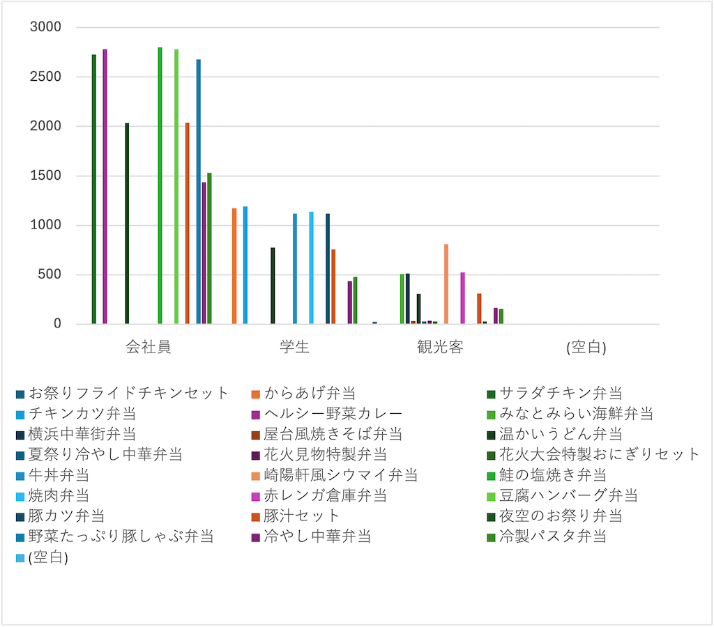

お弁当POSデータ分析
まずはじめに軸に「顧客タイプ」を配置し、顧客の総数やどのような分類で分けられているのかを把握。
次は軸に商品名を配置し、何種類のお弁当が販売されているのかを把握。
そして「顧客タイプ」を軸に配置し、凡例に「商品名」を配置することでどのような人がどんなお弁当を購入しているのかを
調べようとした。
そのまま配置すると合計の値がでてきてしまうため、「商品名」を個数に変更した。
集計グラフ

分析の考察
会社員にはあまり特徴のないお弁当が売れている。また、「ヘルシー野菜カレー」や「野菜たっぷり豚しゃぶ弁当」など
健康志向な商品は会社員からの人気が高い。
「からあげ弁当」や「チキンカツ弁当」などボリュームがあるものは学生からの人気が高い。
「みなとみらい海鮮弁当」や「横浜中華街弁当」などの横浜に関連する地名の付いた商品は、観光客からの人気が高く、
会社員や学生からの購入はなかった。
「温かいうどん弁当」や「豚汁セット」は顧客タイプを問わず、売れていた。